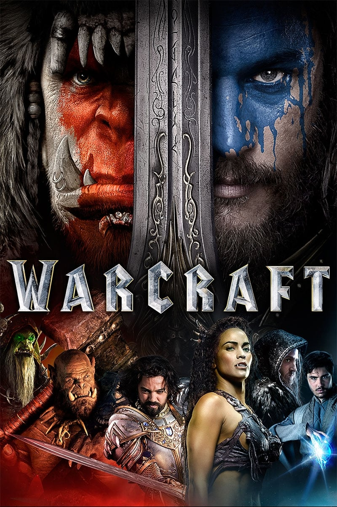

Мировая премьера: 10 июня 2016
Слоган: Два мира. Одна судьба.
Сюжет: Из света рождается тьма, а из тьмы – свет. Много веков Азерот жил в мире и согласии. Но древнее зло, побеждённое и забытое, пробудилось. В мире семи королевств открылся портал, откуда хлынули полчища орков, обречённых на гибель в своей империи и стремящихся завоевать новые земли. Ведомые злобным и могучим магом Гул’даном племена орков несут смерть и хаос. Начался великий конфликт двух рас, и с каждой стороны поднялись герои, которым предначертано решить судьбу своего народа.
Режиссёр: Дункан Джонс
В основе: Компьютерная игра "Варкрафт: Орки и люди" (США, 1994, издатель – "Близзард Энтертейнмент")
В ролях: |
Трэвис Фиммел | Андуин Лотар |
| Бен Шнетцер | Кадгар | |
| Бен Фостер | Медив | |
| Пола Пэттон | Гарона | |
| Доминик Купер | Король Ллейн Ринн | |
| Тоби Кеббелл | Дуротан / Антонидас | |
| Дэниэл Ву | Гул'дан | |
| Роб Казински | Оргрим Молот Рока | |
| Клэнси Браун | Чернорук Разрушитель | |
| Рут Негга | Леди Тарья Ринн | |
| Анна Галвин | Дрека | |
| Каллум Кит Ренни | Мороуз | |
| Баркели Даффилд | Каллан Лотар | |
| Райан Роббинс | Карос | |
| Дин Редман | Варис / Пленный орк | |
| Гленн Клоуз | Алоди |
Бюджет: $ 160 млн.
Кассовые сборы в США: $ 47 млн.
Кассовые сборы в мире: $ 439 млн.
Продолжительность: 1 ч. 54 мин.
Рейтинг: 6.7